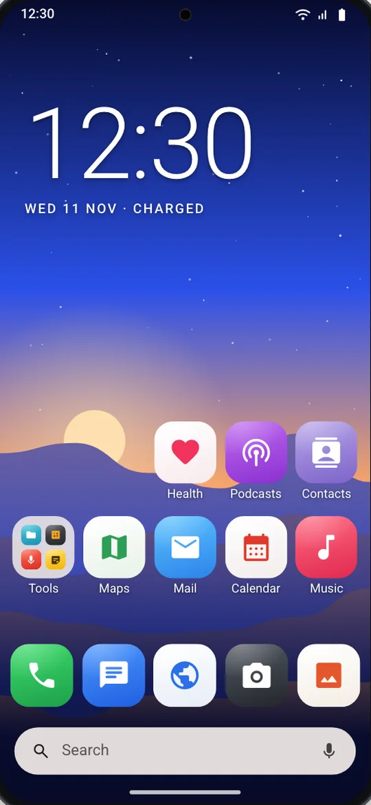
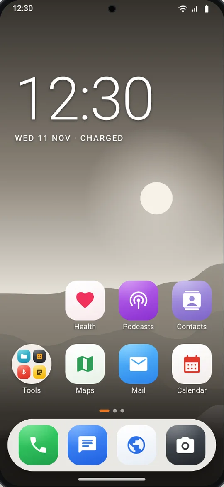
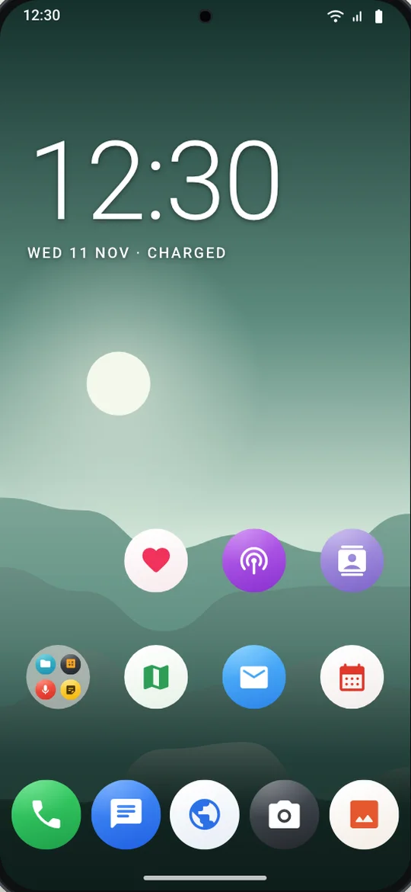
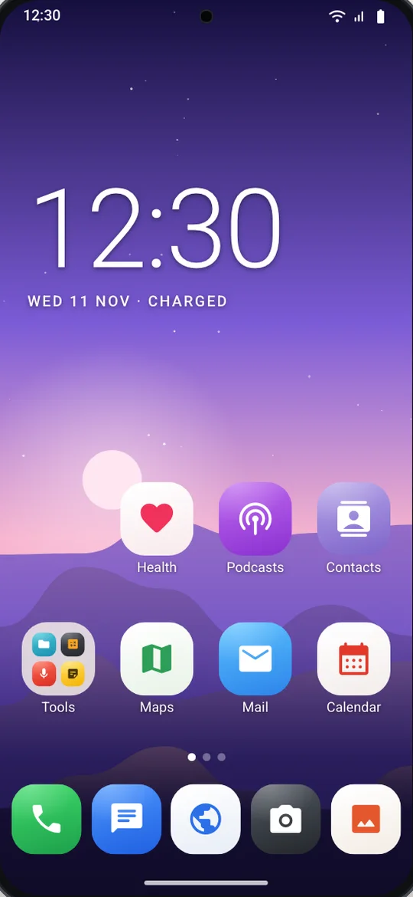
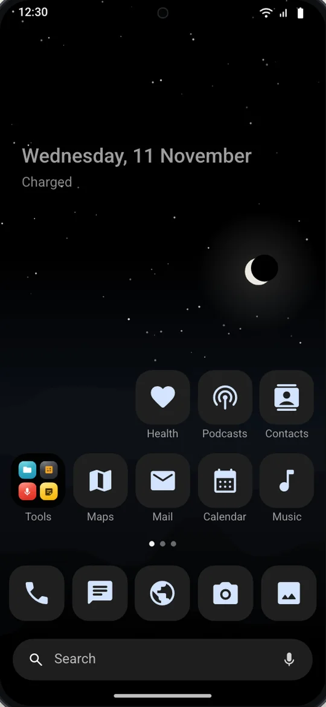
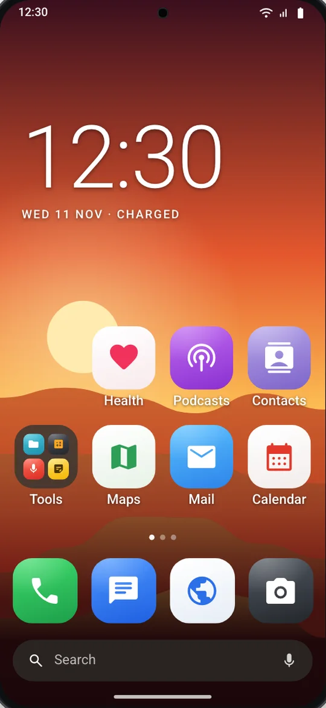
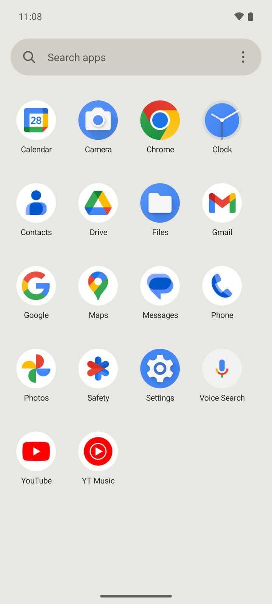

A full launcher in half a megabyte.
Grids, gestures, icon packs, widgets and smart search. No libraries. No internet access.

Fresh installVulcan defaults
ApplianceFramed panels
CalmUnlabelled icons
Samsung-likePaged app drawer
AMOLEDBlack panels
Big and clearLarge icons and textLight enough to miss on the chart.
Download sizes, drawn to the same scale.
Nothing it does can leave your phone.
Vulcan doesn't ask Android for internet access, so it has no way to send anything anywhere. There are no ads, analytics or crash reports. That's in the app's permission list, where anyone can check it.
Notifications are counted in memory and never saved.
Find people from the app drawer, and favourite contacts on the Now page.
Upcoming events on the Now page.
Uses an accessibility service that can't read anything on your screen.
Uses the last location your phone already knows. The sun times are worked out on the phone.
What Nova sends, and what Vulcan doesn't.
Nova Launcher changed owners in 2022 and again in January 2026, and picked up ads and trackers along the way. This is what the current version contains.
| What | Nova Launcher 8.9.4 | Vulcan |
|---|---|---|
| Internet access | Yes | None. It can't send anything. |
| Activity log | Records the Wi-Fi networks you join, Bluetooth devices (name and hardware address), every app you open from the home screen, app usage, and apps you install or remove. Uploaded to Nova's server every 8 hours. | Nothing is recorded or sent. |
| Opting out of the log | No setting for it was found. | Nothing to opt out of. |
| Analytics and tracking | Firebase, Sentry, Amplitude, TikTok and Branch. | None. |
| Ads | Six ad networks (Pangle, Vungle, Moloco, Fyber, Meta, AdMob), chosen by Nova's server. Not shown to Prime users. | None. |
| AI features | Instabridge AI can collect contacts, calendar, location, apps, Wi-Fi and Bluetooth and sync them to its server, if you agree. | None. Contacts and calendar are only read on the phone, and only if you turn those cards on. |
| Source code | Closed. | Public on GitHub, MIT license. |
The Nova column comes from reading the code of the Nova Launcher 8.9.4 app (October 2026) without running it, so it shows what the app contains, not what it sent from any one phone. How this was checked.
Bring your home screen with you.
From Nova, Lawnchair or Octopi: your apps, folders, dock, grid size, most shortcuts and widgets come over, along with your app drawer's tabs, folders, hidden and renamed apps, your gestures and your icon shape. Android asks once before widgets come back.
- Save a backup in your old launcher: in Nova, Backup & import settings → Backup; in Lawnchair, ⋮ → Create backup; in Octopi, General → Backup settings.
- In Vulcan, long-press an empty spot, then tap Settings → Backup & restore → Import from another launcher and pick that file.


Small, not minimal.
- Your layout
- Grids up to 12 by 12, up to 9 pages, page transition effects, widgets you can resize, stack or overlap, and a dock with pages of its own.
- Find apps fast
- An A to Z drawer as a grid, a list or horizontal pages, with search, an optional letter index, and tabs or folders to group apps.
- Gestures
- Swipe, double-tap, pinch, or swipe and rotate with two fingers to open notifications, an app, the drawer or the screen lock. Each icon can have its own swipe-up action.
- Your look
- Icon packs, icon shapes, your own icons and labels, folder styles, notification badges, app launch animations, and a scheduled night mode.
- Long-press an app
- Its shortcuts, notifications, app info or uninstall.
- The Now page
- Swipe right on the first page for the date, music controls, upcoming events and favourite contacts.
Press Home. Pick Vulcan.
Get it on F-Droid or download the APK. The wallpapers below were made for Vulcan and are free to use.